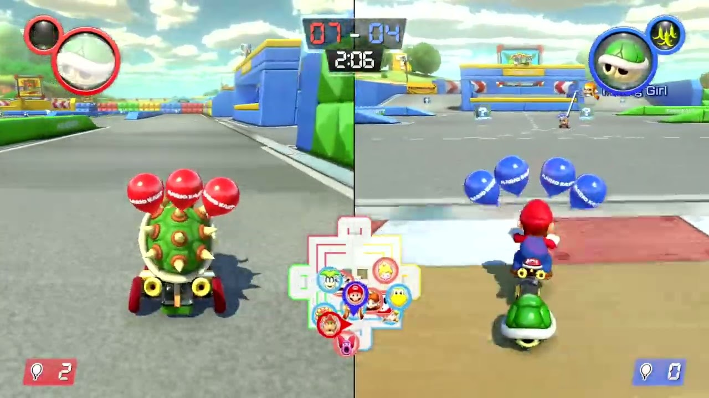
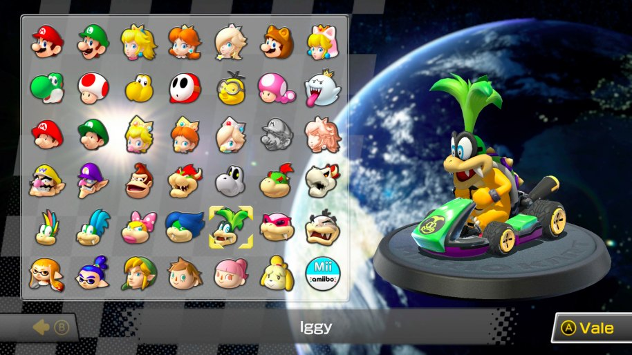
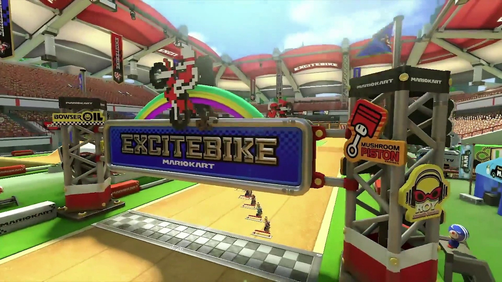

Nos encontramos ante un juego de carreras tipo arcade con un nivel de exigencia adaptable al usuario: cada jugador puede profundizar en su jugabilidad hasta hallar un desafío acorde a sus habilidades. Para quienes buscan una experiencia más accesible, Mario Kart 8 Deluxe ofrece circuitos sencillos y vehículos fáciles de manejar, además de incluir asistencias como la conducción automática, la aceleración sin intervención o el uso del giroscopio para dirigir el kart. No obstante, quienes deseen perfeccionar su técnica y enfrentarse a mayores dificultades encontrarán en MK8 Deluxe un reto solo apto para los más experimentados: dominar los tres tipos de derrapes, emplear los objetos estratégicamente y controlar la potencia de los karts representa un auténtico desafío. Así, solo al competir contra los mejores comprenderemos que alcanzar la maestría en este juego es un privilegio reservado para unos pocos.
Algo similar ocurre con los objetos: aunque a simple vista pueda parecer que su uso depende solo de la suerte, en realidad requieren un profundo conocimiento para aprovecharlos al máximo. En esta versión Deluxe contamos con los clásicos plátanos, caparazones y bombas, además de la incorporación del fantasma Boo, que nos otorga invulnerabilidad temporal. No obstante, la gran novedad es la posibilidad de llevar y usar dos objetos a la vez, lo que introduce un importante componente estratégico. Esta mecánica permite combinaciones poderosas, aunque su activación sigue el orden en que fueron recogidos. En definitiva, el sistema tiene una gran profundidad y, una vez más, lo que parece simple a primera vista termina revelándose como un desafío complejo y sofisticado.
Para sacar el máximo partido a su brillante y profundo diseño, el juego ofrece una amplia variedad de modos. El más emblemático es Grand Prix, donde podemos competir en doce copas, cada una con cuatro circuitos distintos. Para quienes prefieren algo más rápido, Carrera Vs permite disputar una sola carrera, eligiendo libremente el circuito y el nivel de dificultad. También está Contrarreloj, una excelente opción para correr en solitario o contra un fantasma, ideal para perfeccionar nuestra técnica de conducción. En el modo Cooperativo, hasta cuatro jugadores pueden competir en pantalla dividida. Para quienes buscan desafíos en línea, Mario Kart 8 Deluxe ofrece un completo modo multijugador para hasta 12 participantes, con la opción de crear torneos o unirse a los ya existentes mediante un eficiente sistema de búsqueda. Una de las principales incorporaciones es el Modo Batalla, que expande la experiencia con cinco variantes de juego: Batalla de Globos, Bom-ombardeo, Batalla de Monedas, Patrulla Piraña y Rey Sol, añadiendo aún más profundidad y diversión a la competición.
Este nuevo título nos ofrece un plantel de 42 personajes, de los cuales 6 son personajes nuevos. Entre las incorporaciones se destacan Inkling chica y chico, Rey Boo y Huesitos, todos ellos con un diseño visual muy divertido. En cuanto a los vehículos, están disponibles todos los karts, motos y accesorios de entregas anteriores, con la posibilidad de desbloquear las mejores piezas a medida que recolectamos monedas. Cada personaje en Mario Kart 8 Deluxe pertenece a una de tres categorías de peso: Ligero, Normal o Pesado. Los corredores ligeros tienen menor velocidad máxima, pero aceleran con mayor rapidez, mientras que los más pesados tardan más en ganar velocidad, pero alcanzan una mayor punta. En lo que respecta a los circuitos, el juego incluye un total de 48 pistas, entre las cuales se encuentran algunas inspiradas en las sagas Excitebike™ y The Legend of Zelda™.
El apartado técnico es excepcional, con una tasa de 60 fotogramas por segundo que se mantiene estable en todo momento. En el modo de sobremesa, el juego alcanza una resolución de 1080p, mientras que en la versión portátil se ajusta a 720p. Sin embargo, la calidad visual en la pantalla de la Nintendo Switch resulta impresionante, con colores más vibrantes y modelados más pulidos. En cuanto al sonido, el título reutiliza las magníficas melodías de la versión de Wii U, ofreciendo una composición única para cada circuito. Además, incorpora una gran variedad de efectos de sonido, que proporcionan una respuesta inmediata a lo que sucede en pantalla, convirtiéndose en un elemento clave para los jugadores con un oído más atento.
Por todo esto, Mario Kart 8 Deluxe no es simplemente un port de Nintendo WiiU, es el mejor y más completo videojuego de la franquicia lanzado hasta la fecha y un imprescindible de Nintendo Switch.